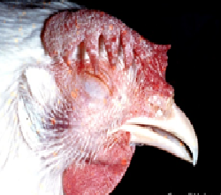

Mycoplasmosis
Is an infectious disease of poultry commonly designated as chronic respiratory disease (CRD) of chickens and infectious sinusitis in turkeys.
M. gallisepticum
- Mainly associated with respiratory tract which may include Coryza, sneezing, moist rales and breathing through the partly open beak.
- Mucus or catarrhal exudates in the respiratory tract and causes exudates in the air sacs.

- Lungs congested & release exudates on pressure.
- Catarrhal exudates in nasal & paranasal passages, Sinuses, trachea, bronchi & air sacs.
- Air sacs opaque & thickened contained mucoid caseous exedutes.
- Tam Vet (2.5 gm/Lit water)/Stiagen Vet Powder (1 gm/2Lit water) for 3-5 consecutive days
- Cotra-Vet-1gm/liter water for 3-5 consecutive days or, Otetra-Vet 50 powder-1 gm/2 litres for 3-5 days
- Respiron Liquid -1 ml/lit twice for 3 days Or, as directed by the Registered Veterinary Physician